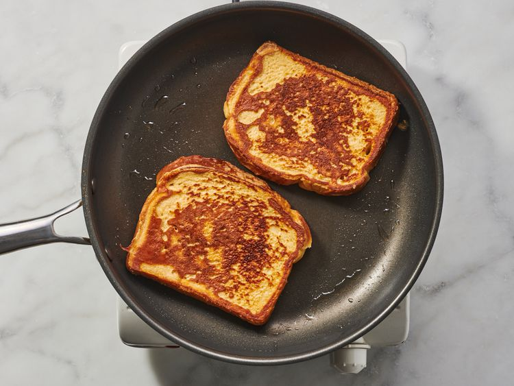

Fluffy French Toast

This fluffy French toast recipe is crisp on the outside, but perfectly soft and tender on the inside.
So, what makes french toast fluffy?
The secret ingredient in this fluffy French toast recipe: all-purpose flour!
Flour binds the liquids together, which creates a more traditional “batter” and helps prevent soggy results.
This extra ingredient ensures the French toast is crispy on the outside, but soft and fluffy on the inside.
- 0.25 cup all-purpose flour
- 1 cup milk
- 3 large eggs
- 1 tablespoon white sugar
- 1 teaspoon vanilla extract
- 0.5 teaspoon ground cinnamon
- 1 pinch salt
- 12 thick slices bread
- Gather all ingredients.
- Measure flour into a large mixing bowl. Slowly whisk in milk. Whisk in eggs, sugar, vanilla extract, cinnamon, and salt until smooth.
- Heat a lightly oiled griddle or frying pan over medium heat. Meanwhile, soak bread slices in milk mixture until saturated.
- Working in batches, cook bread on the preheated griddle or pan until golden brown on each side.
- Serve hot and enjoy.
Recipe taken from allrecipes